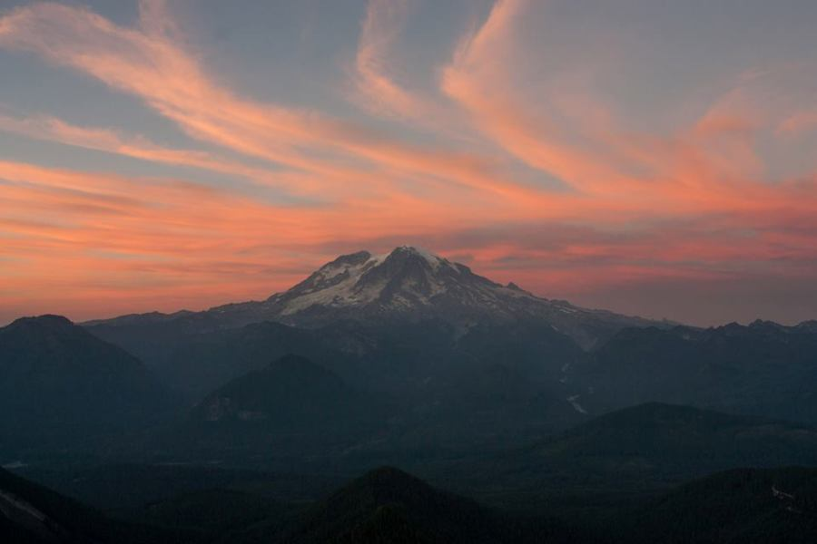
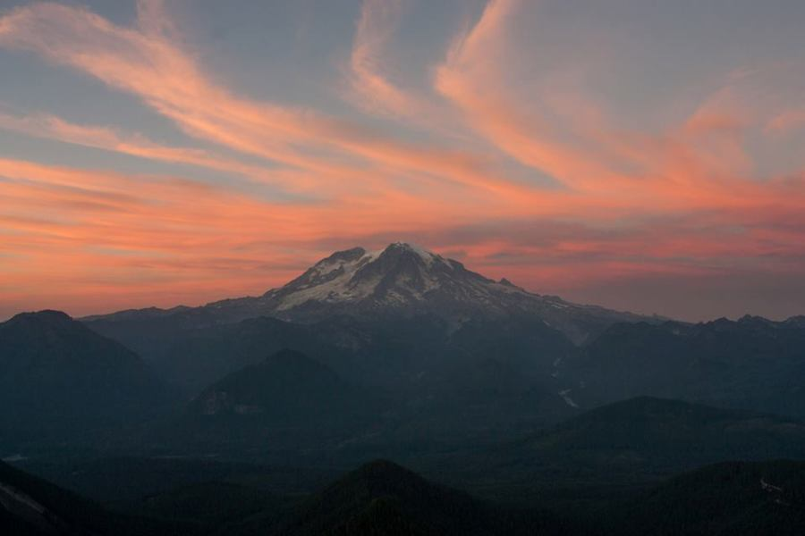
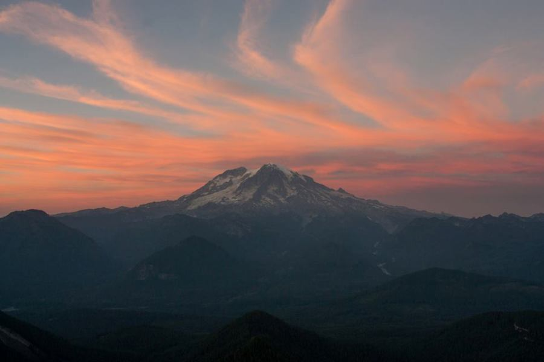
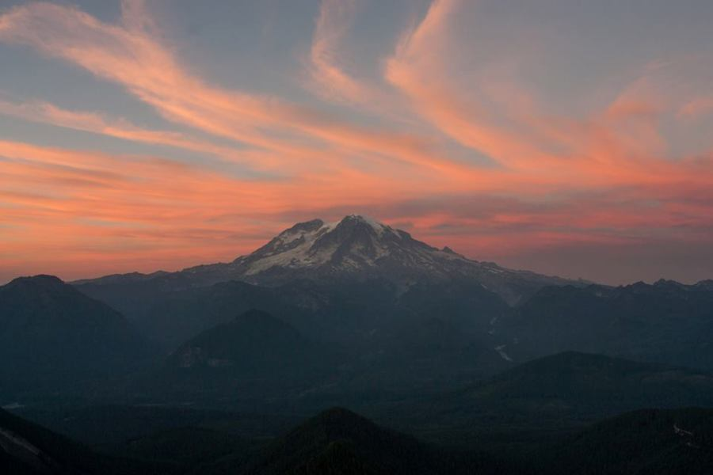

 

Landscape and person photographer. Natural light is my best friend. I like to go to new and exciting places and capture unique images. Every scene is extraordinary if you pay enough attention. I believe true landscape photography is faithfully portraying what the eye perceives - anything less or more is not natural. I always aim to capture the initial moment of awe when viewing a scene, a person, or an idea.
Contact me: info@brendonreedphoto.co
social
^ top